متابعة حضور التلاميذ وإعلام الأولياء بالغياب آلياً عبر الرسائل القصيرة
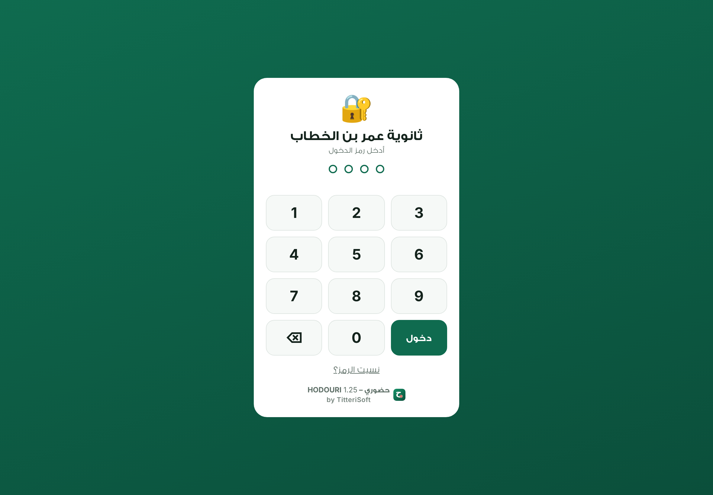
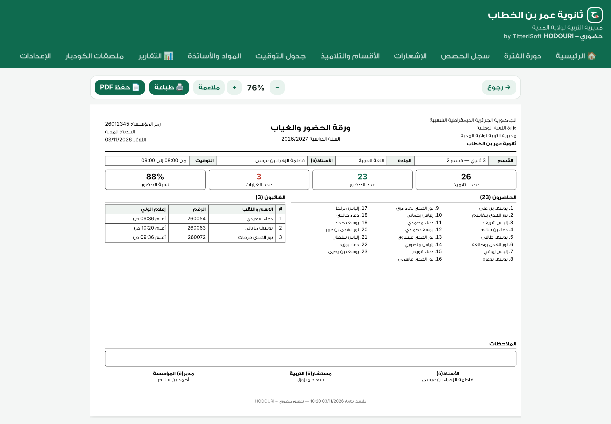
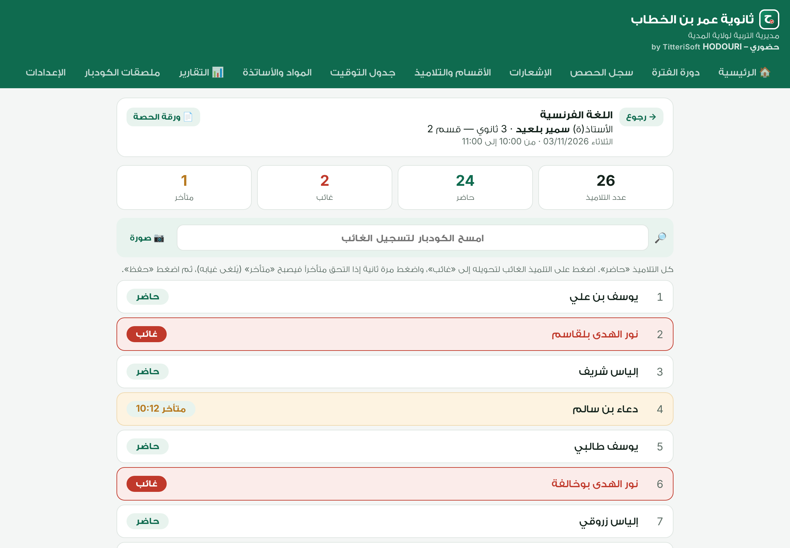
الإصدار 1.25 السنة الدراسية 2026/2027
TitteriSoftتصميم وتطوير
☰
دليل استخدام حضوري – HODOURI
المحتويات
هذا الدليل يرافقك خطوة بخطوة: من تثبيت التطبيق على الطابليت، إلى تسجيل أول غياب، ثم إرسال الرسائل للأولياء واستخراج التقارير. كل صفحة مدعومة بصور حقيقية من التطبيق.
01حضوري في لمحةالفكرة، المزايا، الأرقام الأساسية3
02كيف يعمل التطبيق؟المسار الكامل من القسم إلى هاتف الولي4
03التثبيت والتشغيل الأولملف التثبيت، الأذونات، رمز الدخول5
16طابليت للرسائل فقطجديدحجب المكالمات، الرد الآلي، جرس بداية الحصص18
17أدوات الإدارةجديدأرقام التلاميذ، التأخر، موافقة الأولياء، عدة طابليتات19
18التفعيل وخطوات البدايةجديد30 يوماً تجربة، رمز الجهاز، مفتاح الترخيص20
19نصائح ذهبية وأسئلة شائعة21
دليل استخدام حضوري – HODOURI2
01
نظرة عامة
حضوري في لمحة
حضوري – HODOURI تطبيق أندرويد يُثبَّت على طابليت المؤسسة. يمرّ المكلّف بمتابعة الغيابات على الأقسام حسب جدول التوقيت، يسجّل الغائبين في ثوانٍ، فيُعلَم وليّ كل تلميذ غائب برسالة قصيرة تصل إلى هاتفه مباشرة من شريحة الطابليت.
0خادم أو اشتراك
15دقيقة لإعلام الولي
3متعاملين: موبيليس، جيزي، أوريدو
100%يعمل بدون إنترنت
يتبع جدول التوقيت
يعرف الحصة الجارية من ساعة الطابليت، ويعرض المادة والأستاذ والقسم تلقائياً.
الكل حاضر افتراضياً
يكفي الضغط على الغائبين فقط، ثم «حفظ». تسجيل قسم كامل في أقل من دقيقة.
رسائل SMS آلية
تُرسل من شريحة الطابليت بعد مهلة تحددها الإدارة، مع إعادة المحاولة عند الفشل.
ذكي مع المتعاملين
يتعرّف على متعامل كل ولي من رقمه، ويُرسل من الشريحة الموافقة إن وُجدت شريحتان.
تقارير جاهزة
تقارير القسم والتلميذ والمؤسسة باليوم والأسبوع والشهر والفصل والسنة، بصيغتي PDF و Excel.
استيراد من Excel
تُستورد قوائم التلاميذ الرسمية دفعة واحدة، وتُنشأ الأقسام تلقائياً من أوراق الملف.
العطل والاختبارات
رزنامة كاملة: عطل، برنامج اختبارات، وتوقيت خاص لشهر رمضان.
آمن ومحفوظ
رمز دخول، رمز للإدارة، ونسخ احتياطي تلقائي يحمي البيانات عند تغيير الجهاز.
لمن هذا الدليل؟للإدارة (مدير المؤسسة، الناظر، مستشار التربية) لإعداد التطبيق مرة واحدة، وللمكلّف بالغيابات (المشرف التربوي) للاستعمال اليومي.
دليل استخدام حضوري – HODOURI3
02
إنفوغرافيك
كيف يعمل التطبيق؟
ست خطوات فقط تفصل بين دخول المشرف إلى القسم ووصول الرسالة إلى هاتف الولي.
1
اختيار السنة
الأولى، الثانية، الثالثة…
2
اختيار القسم
مثلاً: 3 ثانوي — قسم 2
3
جدول التوقيت
يوم اليوم بالأخضر، والحصة الجارية مميّزة
4
قائمة الحصة
الكل حاضر، ونحوّل الغائبين فقط
5
الحفظ
ثم القسم التالي في نفس الفترة
6
رسالة الولي
SMS آلية بعد 15 دقيقة
رحلة الرسالة: من الطابليت إلى هاتف الولي
طابليت المؤسسة
حُفظ غياب التلميذ في القسم
←
شريحة الطابليت
بعد المهلة، ومن الشريحة الموافقة لمتعامل الولي
موبيليس 06جيزي 07أوريدو 05
←
ثانوية الإخوة بوعلام
ثانوية الإخوة بوعلام: ابنكم يوسف بن علي (3 ثانوي — قسم 2) غائب عن حصة اللغة الفرنسية يوم 03/11/2026 من 10:00 إلى 11:00.10:36
مهلة قابلة للتعديل
15 دقيقة افتراضياً، حتى يُصحَّح أي خطأ قبل الإرسال.
ساعات إرسال محترمة
لا تُرسل رسائل قبل 07:30 ولا بعد 18:30.
لا رسالة ضائعة
ثلاث محاولات عند الفشل، ثم تنبيه في صفحة «الإشعارات».
دليل استخدام حضوري – HODOURI4
03
البداية
التثبيت والتشغيل الأول
جهّز الطابليت: طابليت أندرويد فيها شريحة (موبيليس أو جيزي أو أوريدو) برصيد أو بعرض رسائل قصيرة.
ثبّت ملف hodouri.apk: افتح الملف على الطابليت، واسمح بتثبيت التطبيقات من مصادر غير معروفة إذا طلب أندرويد ذلك.
افتح «حضوري»: تجد الأيقونة الخضراء على الشاشة الرئيسية للطابليت.
إذن الرسائل: عند أول إرسال (أو رسالة تجريبية) يطلب أندرويد إذن «إرسال الرسائل»، فاضغط «سماح».
رمز الدخول (اختياري ومستحسن): من «الإعدادات ← الحماية والنسخ» فعّل رمزاً من 4 إلى 8 أرقام، واحتفظ برمز الاسترجاع.
للتجربة قبل الإعداد الفعلياضغط «إضافة بيانات تجريبية» في الشاشة الأولى: يضيف التطبيق أربعة أقسام بجداولها وأساتذتها لتتعرّف على طريقة العمل، ثم احذفها من «الحماية والنسخ ← حذف كل البيانات».
خطوات البدايةفي الشاشة الرئيسية قائمة «🚀 خطوات البداية» ترشدك مرحلة بمرحلة حتى يصبح التطبيق جاهزاً (الصفحة 20).
التحديثاتكل إصدار جديد يُثبَّت فوق القديم مباشرة دون فقدان أي بيانات.
شاشة رمز الدخول: شعار المؤسسة ولوحة أرقام كبيرة
دليل استخدام حضوري – HODOURI5
04
الإعداد — مرة واحدة
إعداد المؤسسة
من الإعدادات ← 🏫 المؤسسة تُدخل هوية المؤسسة. تظهر هذه المعلومات في أعلى التطبيق، وعلى ملصقات الكودبار، وفي رأسية كل الوثائق المطبوعة.
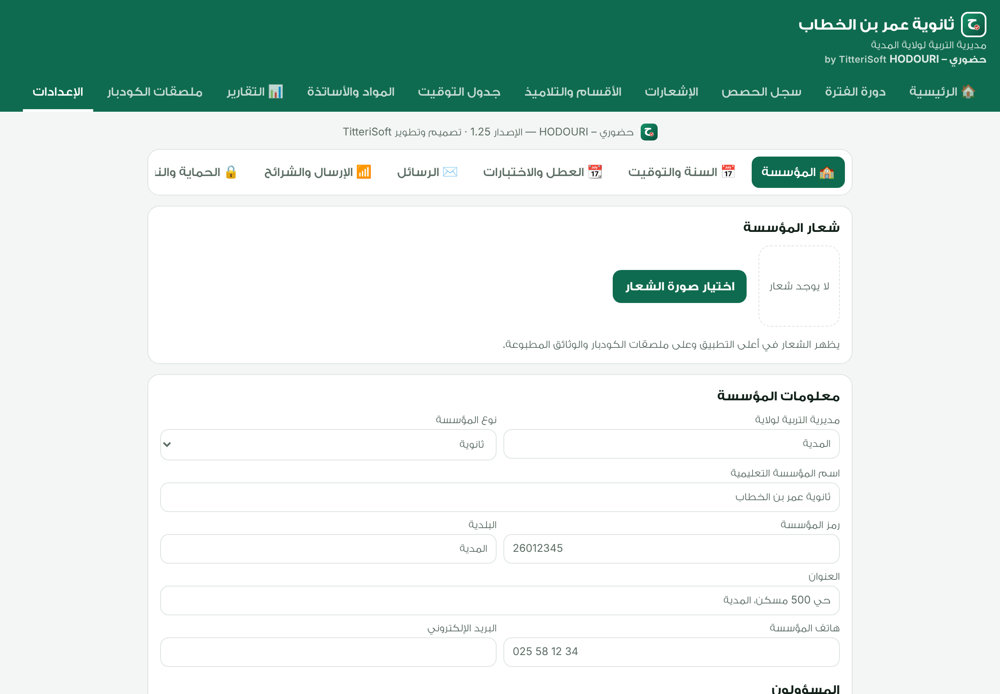
1
شعار المؤسسة: صورة الشعار (PNG أو JPG)، يصغّرها التطبيق تلقائياً.
2
مديرية التربية: اختر الولاية من القائمة أو اكتب اسم المديرية (مثل: الجزائر وسط).
3
نوع المؤسسة: ابتدائية، متوسطة أو ثانوية — تتغير بحسبه قائمة المستويات.
4
الاسم والرمز والبلدية والعنوان: تظهر في رأسية الوثائق الرسمية.
بعدها مباشرةانتقل إلى «السنة والتوقيت» لضبط السنة الدراسية، أيام الدراسة (الأحد إلى الخميس افتراضياً)، فترات الحصص، تواريخ الفصول، وحدود الغياب.
دليل استخدام حضوري – HODOURI6
05
الإعداد — مرة واحدة
الأقسام والتلاميذ واستيراد Excel
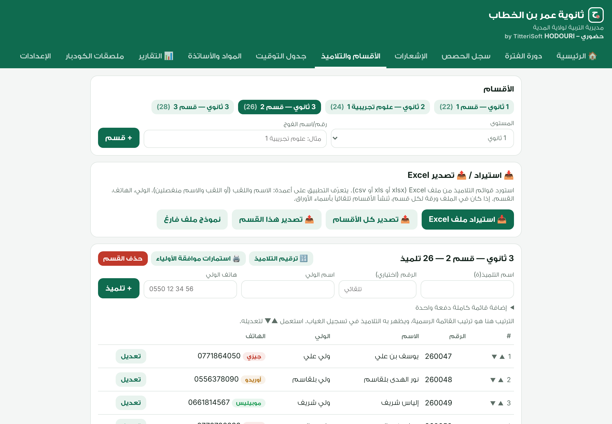
ثلاث طرق لإدخال التلاميذ
استيراد ملف Excel (xlsx · xls · csv): الأسرع. ورقة لكل قسم = قسم جديد تلقائياً.
لصق قائمة من Excel: سطر لكل تلميذ (الاسم، الولي، الهاتف).
إضافة يدوية تلميذاً بتلميذ.
الترتيب الرسمييظهر التلاميذ دائماً بترتيب القائمة كما أدخلتها الإدارة، ويُعدَّل بأزرار ▲▼.
الأعمدة التي يتعرّف عليها التطبيق
العمود في الملف
أمثلة لعناوينه
الاسم الكامل
الاسم واللقب، اللقب والاسم
أو منفصلين
اللقب + الاسم
الولي
اسم الولي، ولي الأمر
الهاتف
هاتف الولي، الهاتف، رقم الهاتف
القسم (اختياري)
القسم، الفوج
رقم التلميذ (اختياري)
الرقم، رقم التسجيل، رقم التعريف
رقم التلميذ والكودباررقم تحدده الإدارة (أو يُولَّد تلقائياً)، ويُقرأ من عمود «الرقم / رقم التسجيل» في ملف Excel. الكودبار يُطبع من «ملصقات الكودبار».
الصفر في أول رقم الهاتفإذا حذف Excel الصفر من بداية الرقم (مثل 550123456)، يُعيده التطبيق تلقائياً عند الاستيراد.
دليل استخدام حضوري – HODOURI7
06
الإعداد — مرة واحدة
المواد والأساتذة وجدول التوقيت
المواد: 13 مادة جاهزة، ويمكن إضافة مواد أخرى أو حذفها.
الأساتذة: اسم كل أستاذ ومادته.
جدول التوقيت: لكل قسم، اختر المادة في كل خانة (يوم × فترة).
أستاذ كل مادة: أسفل الجدول، حدّد أستاذ كل مادة في هذا القسم.
نسخ جدول: زر «نسخ الجدول من قسم آخر» يسرّع إدخال الأقسام المتشابهة.
فترات الحصصتُضبط من «الإعدادات ← السنة والتوقيت» (من / إلى لكل حصة)، وتنطبق على كل الأقسام.
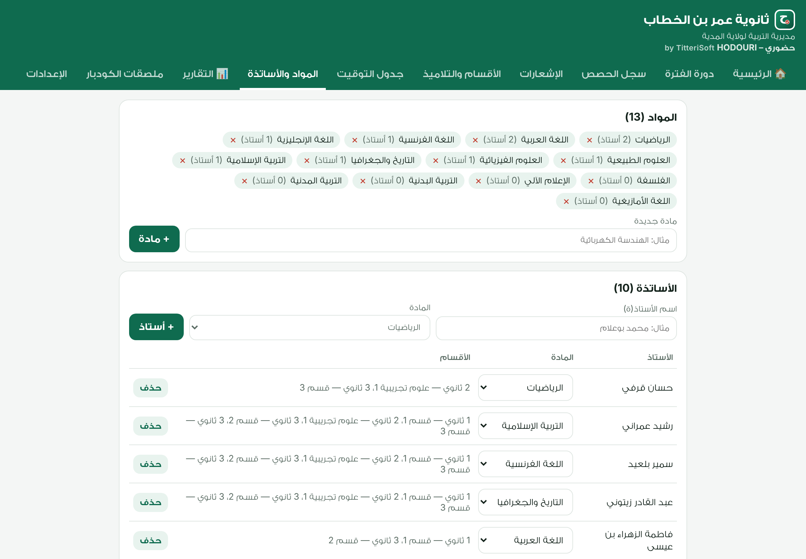
المواد والأساتذة
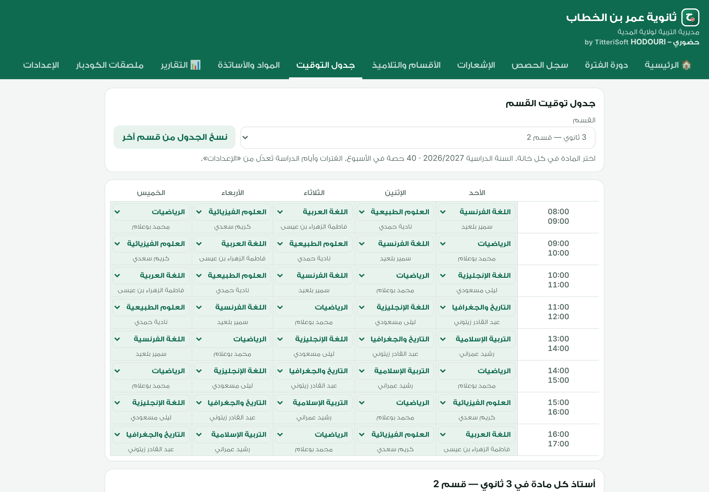
جدول توقيت القسم: المادة في كل خانة، واسم الأستاذ تحتها تلقائياً
دليل استخدام حضوري – HODOURI8
07
الاستعمال اليومي
من السنة إلى جدول اليوم
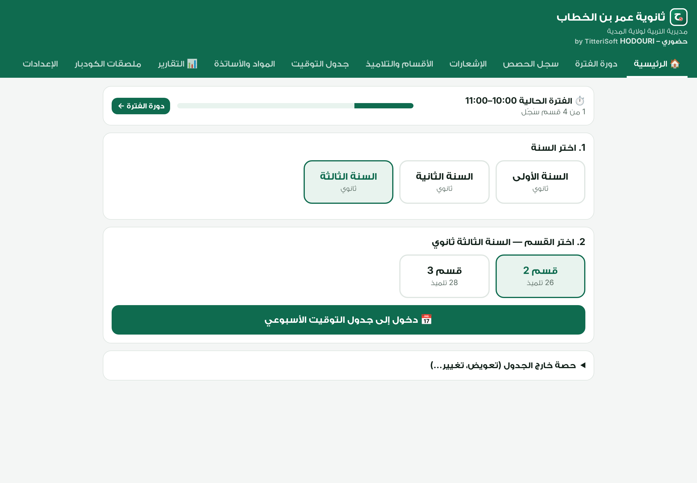
① الرئيسية: اختيار السنة ثم القسم
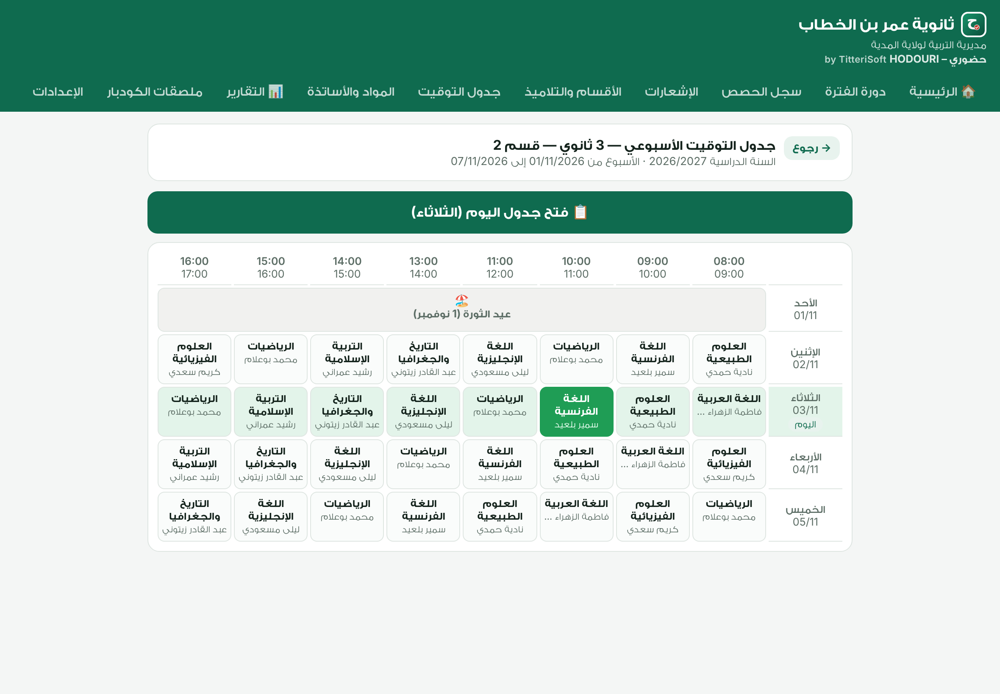
② الجدول الأسبوعي: يوم اليوم بالأخضر الخفيف
الرئيسية: اختر السنة (الأولى، الثانية، الثالثة)، ثم القسم، واضغط «دخول إلى جدول التوقيت الأسبوعي».
الجدول الأسبوعي: يظهر الأسبوع كاملاً بتواريخه. سطر اليوم ملوّن بالأخضر الخفيف، والحصة الجارية حسب ساعة الطابليت بالأخضر الغامق، والعطل والاختبارات ظاهرة على أيامها.
جدول اليوم: اضغط على سطر اليوم أو على «فتح جدول اليوم» لترى حصص اليوم فقط.
بطاقة «الفترة الحالية»أعلى الرئيسية تبيّن كم قسماً سُجّل من أقسام الفترة الجارية، وتنقلك مباشرة إلى «دورة الفترة».
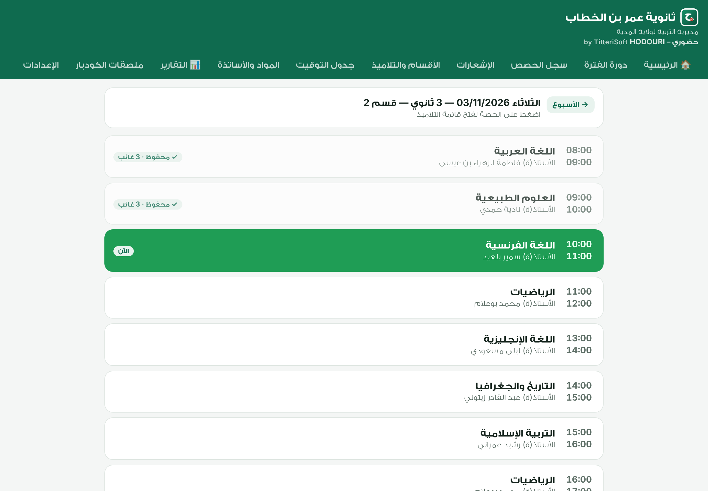
③ جدول اليوم: الحصة الموافقة لساعة الطابليت بالأخضر مع كلمة «الآن»
دليل استخدام حضوري – HODOURI9
08
الاستعمال اليومي
تسجيل الغياب والحفظ
عند فتح الحصة يظهر اسم الأستاذ والمادة والتوقيت، ثم كل تلاميذ القسم بالترتيب الرسمي وكلهم «حاضر». المكلّف يدخل القسم ويحوّل الغائبين فقط، ويسجّل المتأخرين عند التحاقهم.
12345
1
بطاقة الحصة: المادة، الأستاذ، القسم، اليوم والتوقيت.
2
العدّاد: عدد التلاميذ، الحاضرون، الغائبون — يتحدّث مع كل ضغطة.
3
مسح الكودبار: بقارئ أو بكاميرا الطابليت، يسجّل التلميذ غائباً مباشرة.
4
الضغط على التلميذ: ضغطة = «غائب» بالأحمر، ضغطة ثانية = «متأخر» بالبرتقالي مع ساعة التحاقه (يُلغى غيابه)، ضغطة ثالثة = «حاضر».
5
💾 حفظ: يسجّل الغيابات. وإذا حاولت الخروج قبل الحفظ يسألك التطبيق.
+
ملاحظات الحصة أسفل القائمة (تأخر، طرد، تعويض…) تظهر في ورقة الحصة.
خطأ قبل الإرسال؟أعد فتح الحصة وغيّر الحالة ثم احفظ: ما دامت الرسالة لم تُرسل (خلال مهلة الـ 15 دقيقة) لا يصل شيء للولي.
دليل استخدام حضوري – HODOURI10
09
الاستعمال اليومي
دورة الفترة: قسم بعد قسم
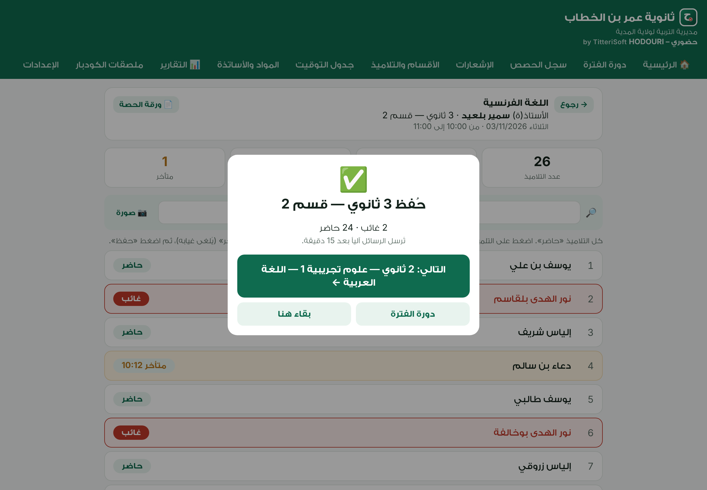
بعد الحفظ: زر مباشر إلى القسم التالي في نفس الفترة
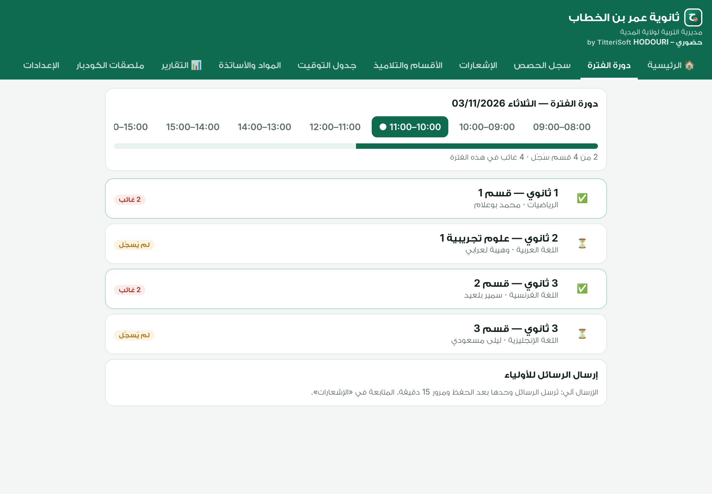
دورة الفترة: ✅ محفوظ — ⏳ لم يُسجّل
الدورة المثالية للمكلّف بالغيابات
1
بداية الفترة
افتح «دورة الفترة»: تظهر كل الأقسام التي عندها حصة الآن
2
القسم الأول
اضغط عليه، حوّل الغائبين، ثم «حفظ»
3
التالي ←
زر «التالي» ينقلك مباشرة إلى القسم الموالي
4
اكتملت الدورة
شريط التقدّم ممتلئ: كل الأقسام ✅
إرسال الرسائل في نهاية الدورةفي الوضع اليدوي يظهر أسفل «دورة الفترة» زر «📨 إرسال الرسائل للأولياء» مع أسماء الغائبين لمراجعتها قبل الإرسال. في الوضع الآلي لا تحتاج أي ضغطة.
دليل استخدام حضوري – HODOURI11
10
إعلام الأولياء
الرسائل القصيرة SMS
الإرسال الآلي افتراضي
تُرسل الرسالة وحدها بعد الحفظ ومرور المهلة.
من شريحة الطابليت، بدون أي ضغطة.
مناسب للاستعمال اليومي المنتظم.
الإرسال اليدوي
لا يُرسل شيء حتى يضغط المكلّف الزر.
مراجعة أسماء الغائبين قبل الإرسال.
مناسب لمن يريد تحكماً كاملاً.
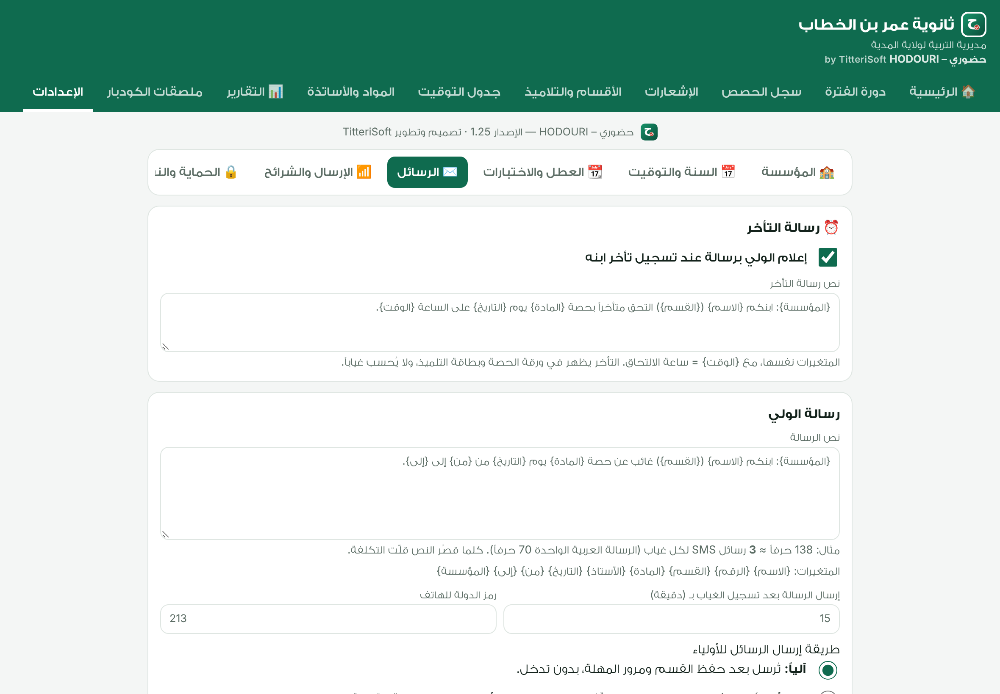
الإعدادات ← الرسائل: النص، المهلة، ساعات الإرسال وطريقته
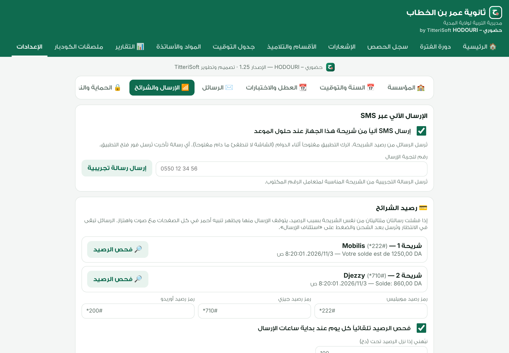
الإعدادات ← الإرسال والشرائح: اكتشاف الشرائح والربط بالمتعاملين
الرسالة العربية 70 حرفاً؛ يبيّن التطبيق كم رسالة يكلّف النص، فاختصره قدر الإمكان.
شريحتان؟
كل ولي يستقبل الرسالة من شريحة متعامله (06 موبيليس، 07 جيزي، 05 أوريدو).
شرط واحد مهميرسل التطبيق ما دام مفتوحاً على الطابليت. تبقى الشاشة مضاءة ما دام التطبيق مفتوحاً، وأي رسالة تأخرت تُرسل فور فتحه من جديد.
دليل استخدام حضوري – HODOURI12
11
المتابعة
الإشعارات وتصحيح الأخطاء
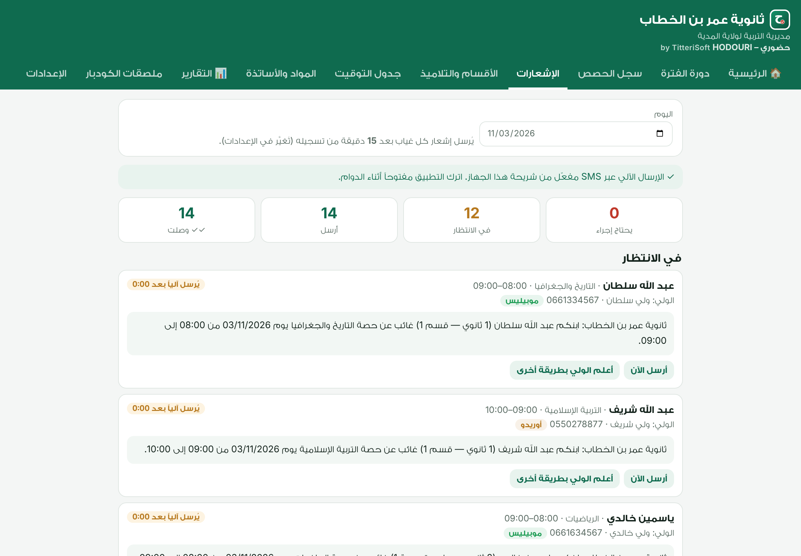
الإشعارات: ما يحتاج إجراء، ما ينتظر (مع العدّ التنازلي)، وما أُرسل ومن أي شريحة
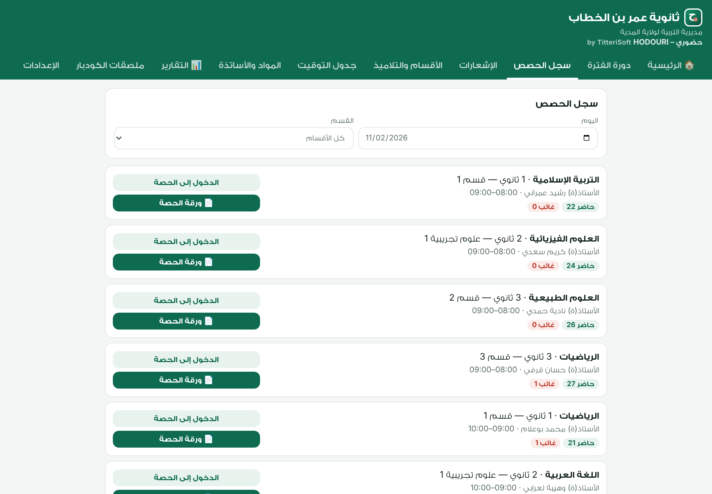
سجل الحصص: أي يوم سابق، مع الحصص التي لم تُسجَّل
يحتاج إجراء
رسالة فشلت (لا رصيد، لا تغطية، لا رقم): أعد المحاولة، أو أرسل SMS يدوياً أو عبر واتساب.
حصة نُسيت
في «سجل الحصص» اختر اليوم: تظهر الحصص غير المسجّلة مع زر «تسجيل الغيابات».
تعديل حصة سابقة
«الدخول إلى الحصة» يتطلب رمز الإدارة، ولا تُرسل رسائل إلا إذا اخترت ذلك.
تلميذ سُجّل غائباً خطأً وأُعلم وليّه؟افتح الحصة واضغط على التلميذ، ثم اختر «تصحيح + رسالة اعتذار» فيصل الولي: «نعتذر، التلميذ كان حاضراً…»، أو «تصحيح بدون رسالة». كل تعديل يُسجَّل وتظهر على الحصة علامة «عُدّلت».
دليل استخدام حضوري – HODOURI13
12
التقارير والوثائق
تقارير جاهزة للطباعة
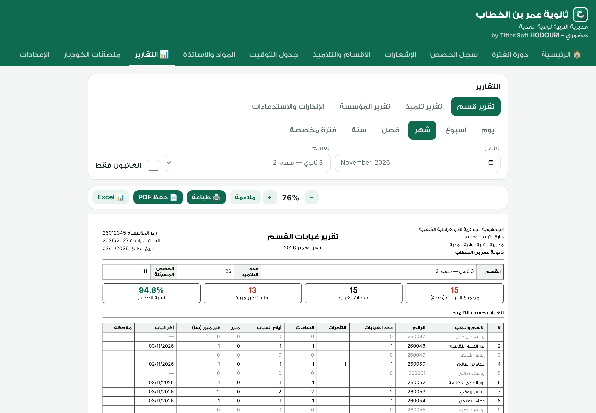
تقرير قسم لشهر كامل: الغياب حسب التلميذ والمادة، مع المبرر وغير المبرر
كل ساعة (أو مدة تختارها) في Download/Hodouri، مع نسخة يومية بالتاريخ.
تغيير الطابليت أو الهاتف في 3 خطوات
1. احفظ
«💾 حفظ نسخة الآن» على الجهاز القديم
←
2. أرسل
«📤 إرسال النسخة» عبر واتساب أو البريد أو Drive
←
3. استرجع
ثبّت حضوري على الجهاز الجديد ← «استرجاع من ملف»
نصيحة لا تُهملالحفظ التلقائي يبقى داخل الطابليت. أرسل نسخة لنفسك مرة في الأسبوع على الأقل، حتى لا تضيع البيانات إذا ضاع الجهاز.
دليل استخدام حضوري – HODOURI16
15
إعلام الأولياء
رصيد الشريحة وتأكيد الوصول
لكل رسالة يطلب التطبيق تقرير استلام من الشبكة، ويراقب رصيد الشرائح حتى لا يتوقف إعلام الأولياء دون أن تنتبه.
الإشعارات: عدّاد «✓✓ وصلت» وحالة كل رسالة
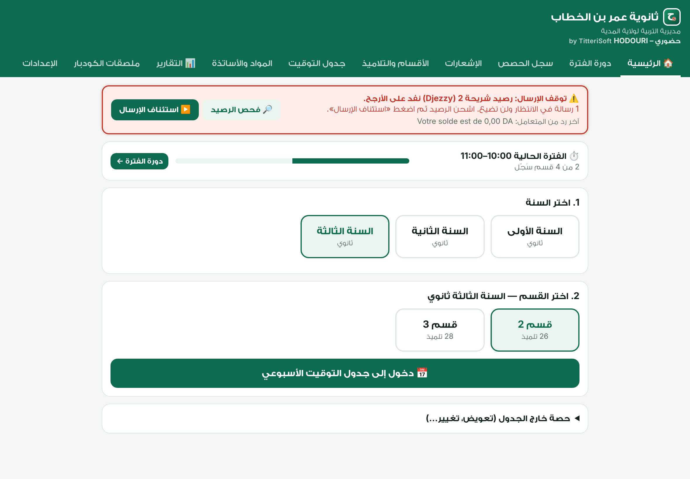
نفاد الرصيد: شريط أحمر في كل الصفحات مع صوت واهتزاز
✓✓ وصلت
الرسالة وصلت فعلاً إلى هاتف الولي، مع ساعة الوصول. دليل للمؤسسة إذا قال ولي إنها لم تصله.
✗ لم تصل
الرقم خاطئ أو خارج الخدمة: تظهر أزرار SMS يدوي وواتساب لإعلام الولي بطريقة أخرى.
نفاد الرصيد
بعد فشلين متتاليين من نفس الشريحة يتوقف الإرسال منها، وتبقى الرسائل في الانتظار حتى «استئناف الإرسال».
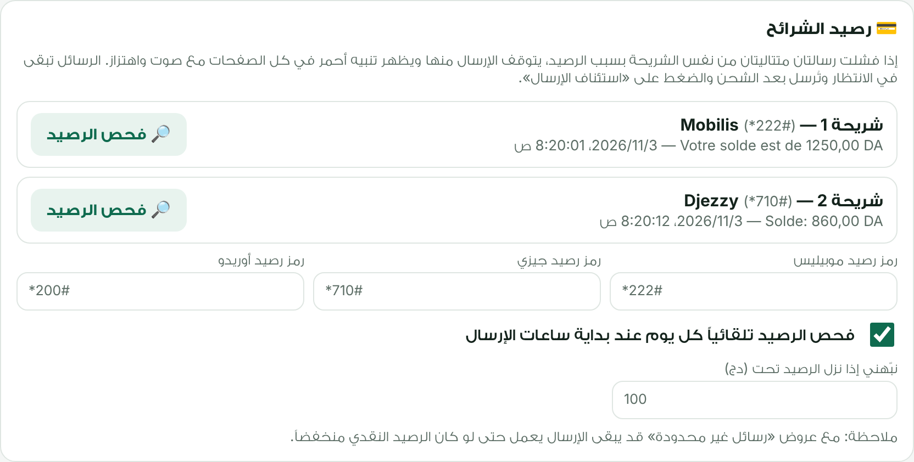
فحص الرصيد من داخل التطبيق لكل شريحة: موبيليس *222#، جيزي *710#، أوريدو *200# (قابلة للتعديل).
فحص يومي تلقائي عند بداية ساعات الإرسال، وتنبيه برتقالي إذا نزل الرصيد تحت حد تختاره.
بعد الشحن اضغط «▶️ استئناف الإرسال» فتخرج كل الرسائل المنتظرة.
دليل استخدام حضوري – HODOURI17
16
تهيئة الطابليت
طابليت للرسائل فقط
من الإعدادات ← الإرسال والشرائح تجعل الطابليت مخصصاً لإشعارات الغياب: لا يرنّ أثناء الدوام، ولا يُستهلك رصيده في المكالمات.
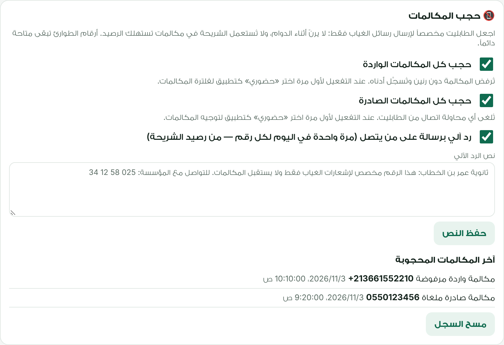
1
حجب المكالمات الواردة: تُرفض دون رنين وتُسجَّل في «آخر المكالمات المحجوبة».
2
حجب المكالمات الصادرة: تُلغى أي محاولة اتصال من الطابليت. أرقام الطوارئ تبقى متاحة دائماً.
3
الرد الآلي: رسالة لمن يتصل (مرة في اليوم لكل رقم) فيها هاتف المؤسسة.
أول تفعيليسأل أندرويد عن «تطبيق فلترة المكالمات» و«توجيه المكالمات»: اختر «حضوري» في الحالتين. يتطلب أندرويد 10 أو أحدث.
🔔 جرس بداية الحصص
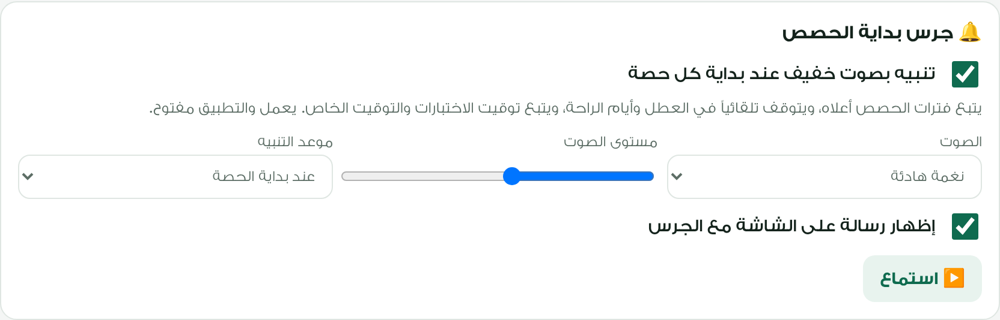
1
من الإعدادات ← السنة والتوقيت: ثلاث نغمات هادئة، مستوى الصوت، وموعد التنبيه (عند البداية أو قبلها بدقيقتين أو 5 دقائق).
2
يتبع فترات الحصص، ويسكت تلقائياً في العطل وأيام الراحة، ويتبع توقيت الاختبارات.
3
يرنّ والتطبيق مفتوح، بعد أول لمسة للشاشة.
دليل استخدام حضوري – HODOURI18
17
الإدارة
أدوات الإدارة
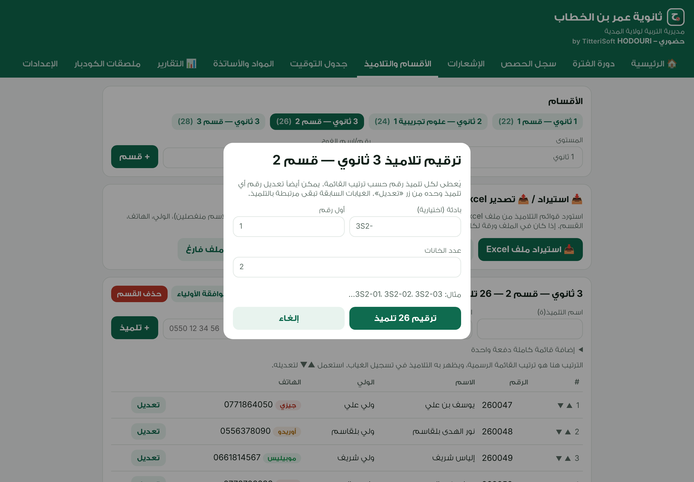
🔢 ترقيم تلاميذ القسم: بادئة، أول رقم، عدد الخانات
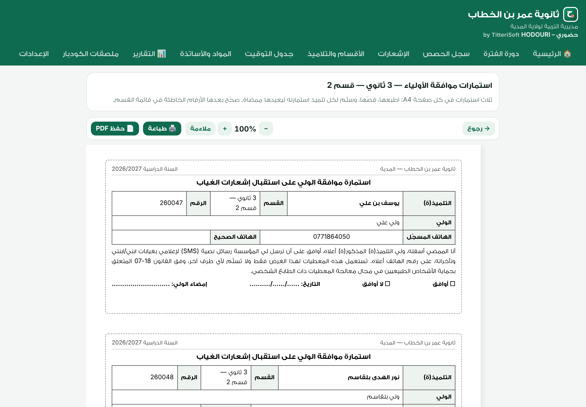
🖨️ استمارات موافقة الأولياء: ثلاث في كل صفحة A4
رقم التلميذ
تحدده الإدارة (أرقام، حروف لاتينية، شرطة) من «تعديل»، أو بترقيم القسم كاملاً. لا يتكرر، والغيابات السابقة تبقى مرتبطة بالتلميذ.
موافقة الأولياء
استمارة لكل تلميذ فيها الرقم المسجّل وخانة الرقم الصحيح والإمضاء، وفق القانون 18-07. صحّح الأرقام بعد استرجاعها.
التأخر
يُسجَّل بساعته، ويظهر في ورقة الحصة وبطاقة التلميذ وتقرير القسم، ولا يُحسب غياباً. رسالته اختيارية.
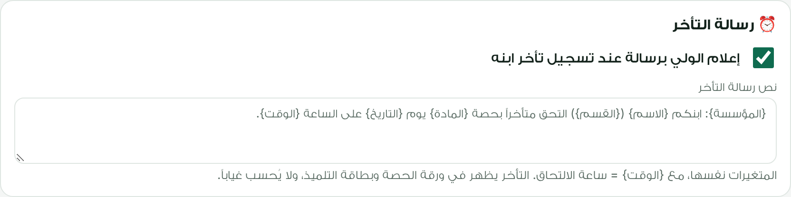
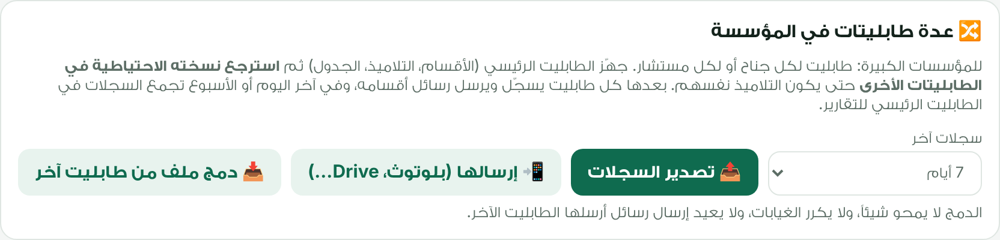
عدة طابليتات في مؤسسة كبيرةجهّز الطابليت الرئيسي ثم استرجع نسخته الاحتياطية في الطابليتات الأخرى. كل طابليت يسجّل ويرسل لأقسامه، ثم «📤 تصدير السجلات» و«📥 دمج ملف من طابليت آخر» في الرئيسي: لا تكرار، ولا رسالة تُرسل مرتين.
دليل استخدام حضوري – HODOURI19
18
البداية
التفعيل وخطوات البداية
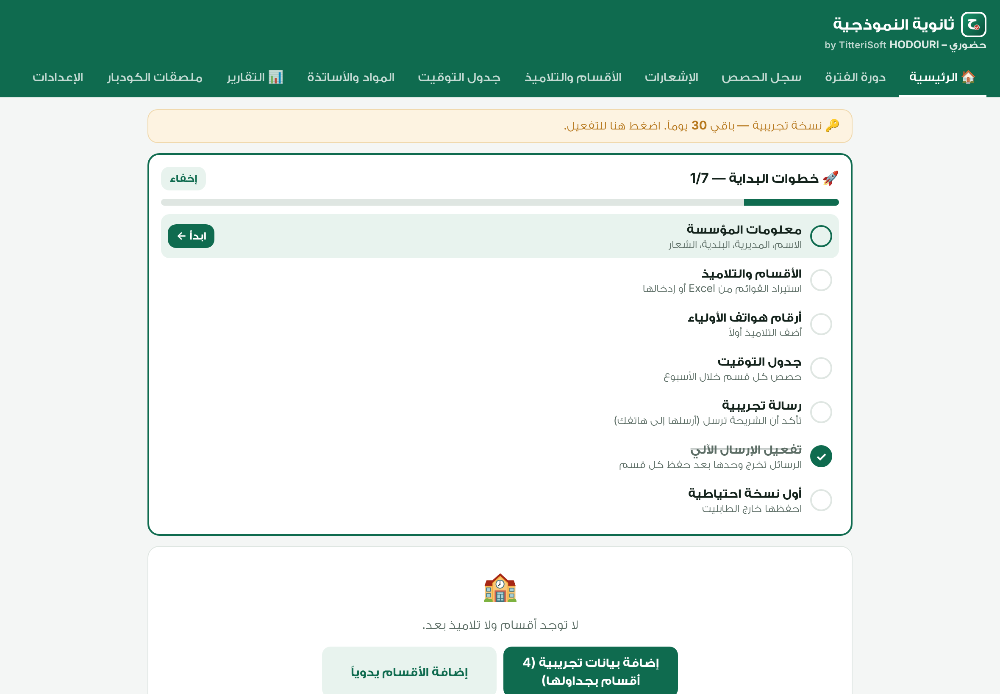
الشاشة الرئيسية عند أول تشغيل: خطوات البداية والفترة التجريبية
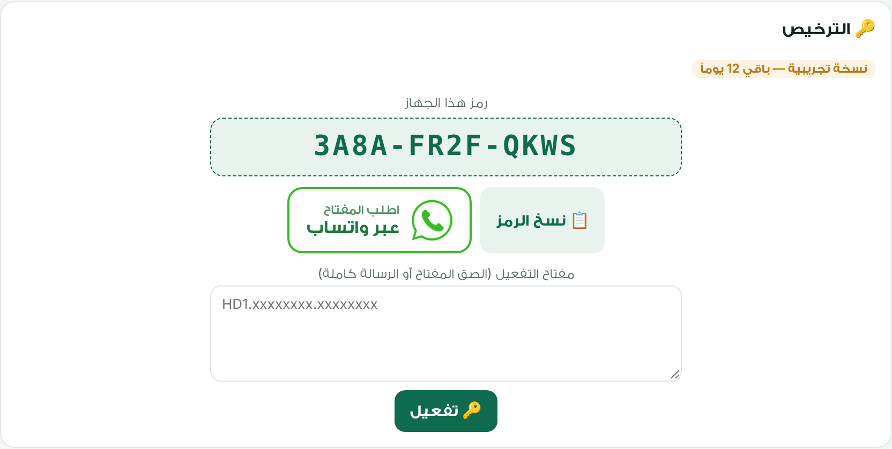
من التجربة إلى التفعيل
1
30 يوماً تجربة
كل الخصائص مفتوحة من أول تشغيل، مع شريط يبيّن الأيام الباقية
2
رمز الجهاز
الإعدادات ← حول التطبيق ← الترخيص: زر «اطلب المفتاح عبر واتساب»
3
الصق المفتاح
الصق الرسالة كاملة في خانة التفعيل، والتطبيق يستخرج المفتاح وحده
4
مفعّل
تظهر مدة الترخيص، وتنبيه قبل انتهائه بـ 15 يوماً
بياناتك في أمانعند انتهاء التجربة أو الترخيص تبقى كل البيانات كما هي، ويبقى زر «حفظ نسخة احتياطية» متاحاً. المفتاح خاص بطابليت المؤسسة ولا يعمل على جهاز آخر.
دليل استخدام حضوري – HODOURI20
19
للاستعمال الأمثل
نصائح ذهبية وأسئلة شائعة
⚡اترك التطبيق مفتوحاً والطابليت موصولة بالشاحن أثناء الدوام
✉اختصر نص الرسالة لتكلّف رسالة واحدة أو اثنتين
⟳أرسل نسخة احتياطية لنفسك كل أسبوع
☎تأكد من أرقام الأولياء وأعلمهم بالخدمة
؟هل يحتاج التطبيق إلى الإنترنت؟
لا. التسجيل والرسائل والتقارير كلها تعمل بدون إنترنت. الإنترنت مفيد فقط لإرسال النسخة الاحتياطية عبر واتساب أو البريد.
؟كم تكلّف الرسائل؟
تُحتسب من رصيد شريحة الطابليت حسب عرض المتعامل. عدّاد في «الإعدادات ← الرسائل» يبيّن عدد الرسائل لكل غياب.
؟ماذا لو أُغلق التطبيق أو انطفأت الطابليت؟
لا تضيع أي رسالة: كل رسالة متأخرة تُرسل فور فتح التطبيق من جديد، ضمن ساعات الإرسال المسموحة.
؟تلميذ التحق متأخراً بعد الحفظ؟
أعد فتح الحصة واضغط على اسمه مرة ثانية فيصبح «متأخر» ويُلغى غيابه قبل إرسال الرسالة. إن كانت رسالة الغياب قد أُرسلت، استعمل «تصحيح + رسالة اعتذار».
؟هل يظهر اسم المؤسسة كمرسل للرسالة؟
لا، الرسالة تصل من رقم شريحة الطابليت وتبدأ دائماً باسم المؤسسة. سلّموا الرقم للأولياء ليحفظوه باسم المؤسسة.
؟هل يمكن طباعة الوثائق من الطابليت؟
نعم: «طباعة» أو «حفظ PDF» تفتح نافذة الطباعة في أندرويد، ومنها تختار الطابعة أو «حفظ بتنسيق PDF».
؟نسيت رمز الدخول، ماذا أفعل؟
في شاشة الدخول اضغط «نسيت الرمز؟» وأدخل رمز الاسترجاع الذي ظهر عند تفعيل الرمز.
؟كيف أحصل على التحديثات أو الدعم؟
تواصل مع TitteriSoft عبر واتساب 0783 22 76 98 أو الموقع www.titterisoft.com. كل تحديث يُثبَّت فوق النسخة الحالية دون فقدان البيانات.